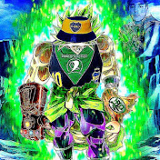

Swag Lab - El Estratega Imperturbable:
Con una mente calculadora y una habilidad excepcional para trazar estrategias ingeniosas, Swag Lab es el cerebro detrás de las operaciones de la Z Gang. Siempre se le puede encontrar meticulosamente planificando los asaltos más audaces y ejecutando tácticas que desconciertan a sus enemigos. Su capacidad para prever los movimientos de los oponentes ha llevado al clan a conquistar territorios que parecían inalcanzables. Una vez, lideró un asedio épico contra una fortaleza enemiga, utilizando trampas y emboscadas que dejaron boquiabiertos a sus adversarios.
MaximoNFS - El Maestro de la Supervivencia:
Si hay alguien que puede enfrentar los peligros del mundo de Rust con calma y destreza, es MaximoNFS. Dotado de una habilidad innata para la supervivencia, ha superado innumerables desafíos, desde encuentros con bestias salvajes hasta traicioneras trampas de otros jugadores. Su capacidad para encontrar recursos vitales en los momentos más desesperados ha permitido a la Z Gang sobrevivir en condiciones extremas. En una ocasión, escapó de una persecución enemiga atravesando un denso Oceano y utilizando su conocimiento del terreno para confundir a sus perseguidores.
Swagboy Rastofen - El Arquero de Precisión:
Swagboy Rastofen es el arquero supremo de la Z Gang, conocido por su puntería impecable y su capacidad para eliminar a los enemigos desde distancias sorprendentes. Sus habilidades con el arco y la flecha son legendarias, y se dice que ha derribado a enemigos en pleno galope y en movimiento. En una ocasión, durante una emboscada nocturna, Swagboy Rastofen eliminó a tres oponentes con tres flechas consecutivas en la oscuridad total, lo que llevó a sus compañeros de clan a la victoria y dejó a los enemigos atónitos.
Wachin Amarillo - Recolector Inquebrantable:
Wachin Amarillo ha demostrado ser un recolector inquebrantable, capaz de reunir recursos con una eficiencia y velocidad sorprendentes. Su conocimiento del terreno y su habilidad para encontrar los lugares más ricos en materias primas han llevado al clan a un nivel de prosperidad y seguridad sin igual. Se cuenta la leyenda de que una vez emprendió una expedición solitaria en busca de recursos, y regresó a la base con una cantidad impresionante de materiales en un tiempo récord, dejando a todos atónitos ante su destreza.